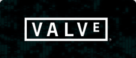

Qui sont les acteurs majeur du monde de l’esport ?
Les jours où le jeu vidéo compétitif faisait figure de marché de niche peu attrayant ne sont pas si loin. Il n’y avait pas vraiment d’« industrie » eSport et la planète dans son ensemble n’étaient pas consciente du fait que des gens jouaient aux jeux vidéo dans des tournois officiels. Toutefois, au cours des dernières années, la popularité des eSports a véritablement explosé. Le jeu vidéo compétitif est à présent considéré comme un vrai sport, et les joueurs professionnels sont reconnus comme étant des athlètes. Ils sont nombreux parmi les meilleurs joueurs à être de véritables stars avec des légions de fans à travers le globe.
Ces joueurs ont aidé à créer une industrie eSport florissante. Ils ne sont cependant pas les SEULS contributeurs puisqu’il existe beaucoup d’autres acteurs au sein des eSports. Beaucoup d’entreprises, d’organisations et de personnes ont joué un rôle dans la mise en place de la scène professionnelle eSport. Leurs contributions ne devraient pas être négligées.
Dans cet article, nous expliquons tout au sujet des acteurs essentiels de l’industrie eSport. Nous donnons aussi des détails sur quelques entreprises et personnes qui font partie de ces acteurs. Veuillez noter que nous ne parlons pas des joueurs ici. La raison est simple, nous leur consacrons une autre page tout entière.
Développeurs et éditeurs de jeu.
Nous commençons par les développeurs et les éditeurs pour une bonne raison. Les eSports n’existeraient tout simplement pas sans eux. Ce sport repose (clairement) sur les jeux vidéo, il est donc évident que les entreprises qui ont créé et distribué ces jeux ont eu un rôle important.
Bien évidemment, l’ENSEMBLE des développeurs de jeu ne créent pas de jeux eSports. Bien que la montée du jeu vidéo compétitif a eu un impact certain sur l’industrie du jeu en général, seul un petit nombre de développeurs sont véritablement dévoués au eSport pour le moment.
C’est déjà quelque chose qui est en train de changer. Le potentiel à long terme des eSports n’est plus en doute et de plus en plus de développeurs s’en sont aperçu ces dernières années. À l’heure actuelle, il y a peu de développeurs que l’on peut considérer comme des contributeurs MAJEURS de l’industrie eSport.
Trois entreprises peuvent toutefois être considérées comme tel : Blizzard Entertainment, Riot Games et Valve Corporation. Elles ont créé plusieurs des jeux eSports les plus importants qui sont actuellement utilisés au niveau professionnel.
VALVE CORPORATION
Valve Corporation possède plusieurs titres à son actif, dont deux en particulier ont fait forte impression dans le jeu compétitif. Counter-Strike: Global Offensive et Dota 2 sont parmi les jeux eSports les plus populaires en ce moment.

RIOT GAMES
Créé en 2006, Riot Games est l’entreprise derrière l’incroyable succès qu’est League of Legends. Ce jeu multijoueur en ligne possède plus de 100 millions de joueurs enregistrés et à un rôle GIGANTESQUE sur la scène eSport.

BLIZZARD ENTERTAINMENT
Blizzard Entertainment fait des jeux vidéo depuis 1991. Son jeu de stratégie StarCraft II a été l’un des premiers jeux à être joué professionnellement. Elle a aussi publié d’autres jeux eSports. On compte parmi eux Heroes of the Storm et Overwatch.

On compte parmi les autres développeurs et éditeurs importants de jeux eSports les suivants :
- Activision
- Electronic Arts
- Psyonix
- Wargaming
- Microsoft Studios
- Capcom
- Hi-Rez Studios
Organisateurs et hébergeurs de compétition
Les entreprises qui organisent et hébergent les ligues et tournois professionnels sont capitales pour l’industrie eSport. Ce sont elles qui offrent aux meilleures équipes et aux meilleurs joueurs une plateforme pour mettre en avant leurs compétences dans des tournois compétitifs. Ce sont ces tournois qui génèrent de l’intérêt pour les eSports puisqu’ils sont nombreux à attirer un large public d’un peu partout dans le monde.
Certains des plus gros tournois eSports sont gérés directement par les développeurs du jeu. Par exemple, le Championnat du monde de League of Legends est organisé par Riot Games. Valve Corporation tient plusieurs tournois en vue pour Dota 2 et CS:GO, tandis que Blizzard Entertainment anime plusieurs événements pour tous ses jeux eSports.
Il existe aussi beaucoup d’entreprises tierces qui organisent et animent des tournois eSports professionnels. Voici une liste de trois noms importants :
ESL
ESL était connu à la base sous le nom de Electronic Sports League. Créé en 2000, elle fut l’une des premières entreprises à organiser des tournois eSports professionnels. Elle gère les « ESL PRO Leagues » de plusieurs jeux célèbres ainsi que les séries de tournois « ESL One ».
Major League Gaming
Major League Gaming (MLG) a été fondé en 2002. Elle est basée aux États-Unis et organise des compétitions eSports d’un bout à l’autre de l’Amérique du Nord. Le MLG Pro Circuit est l’une des plus anciennes ligues eSports et inclut des jeux comme Starcraft II et League of Legends.
Gfinity
Gfinity est basée au Royaume-Uni. Cette entreprise organise des tournois en ligne réguliers pour les joueurs professionnels comme pour les joueurs occasionnels, et héberge aussi plusieurs tournois en direct. Elle a aussi ouvert la première arène dédiée aux eSports en 2015.
Sponsors & Investisseurs
Sponsors & Investisseurs L’industrie eSport n’en serait pas là où elle est aujourd’hui sans l’argent qu’on lui a injecté. Au cours des dernières années, bon nombre d’entreprises et d’individus ont fourni les fonds dont l’industrie a eu besoin pour se développer. Il a s’agit la plupart du temps de parrainages et d’investissements directs.
Les sponsors ont sans aucun doute un rôle fondamental dans les eSports. Ils soutiennent financièrement les compétitions pour rendre les prix plus attractifs et parrainent aussi les équipes comme les joueurs. Il nous serait impossible de faire une liste de CHAQUE entreprise qui a soutenu les eSports d’une manière ou d’une autre, mais voici une liste des plus grands contributeurs :
Twitch
Microsoft
Gamestop
Redbull
HTC
Sony
YouTube
Comcast
Logitech
Intel
IGN
Coca-Cola
Gilette
Mobil 1
BMW
L’investissement direct reçu par l’industrie eSport n’est pas toujours aussi visible que le parrainage. Il n’en est pas moins important pour autant, et prend bien des formes différentes. Il existe par exemple le capital-risque ou encore les investissements de capitaux qui viennent de particuliers ou d’entreprises. On a même vu le cas d’équipes de sport traditionnelles investir dans les eSports.
Ces derniers temps, plusieurs riches célébrités ont investi dans les eSports. La plupart de ces célébrités viennent du milieu sportif, mais ce n’est pas toujours le cas. Voici une liste de quelques-unes des personnes connues qui ont investi dans l’industrie :
Rick Fox (joueur de basketball retraité reconverti en acteur)
Drake (rappeur américain)
Alex Rodriguez (joueur de baseball)
Ashton Kutcher (acteur)
Magic Johnson (joueur de basketball retraité)
Shaquille O’Neal (joueur de basketball retraité)
Alisher Usmanov (homme le plus riche de Russie)
Steve Aoki (DJ/musicien)
Mark Cuban (propiétaire des Mavericks de Dallas)
Lil Yachty (rappeur américain)
Streamers
Les streamers ont joué un rôle prépondérant dans la popularité croissante des eSports. Que font-ils ? Pour faire simple, ils diffusent leurs parties de jeux vidéo. Beaucoup de fans de jeux ADORENT regarder d’autres personnes jouer à leur jeu favori, et ces streamers attirent un large public.
Certains streamers sont des joueurs professionnels tandis que d’autres sont des joueurs amateurs compétents. Il y a même quelques streamers célèbres qui ne jouent pas particulièrement à un bon niveau. L’important pour la majorité des fans est que le streamer doit être amusant et/ou capable d’expliquer ce qui se passe en cours de jeu.
La majorité des streamers utilisent Twitch pour leurs diffusions. Certains utilisent Youtube, mais il existe aussi diverses autres plateformes. Les streamers proposent généralement des diffusions en direct où ils jouent plusieurs heures d’affilée. Ils ont aussi tendance à proposer des vidéos préenregistrées.
Voici une liste de quelques-uns de nos streamers favoris du moment. Nous avons inclus les jeux qu’ils jouent et des liens vers leurs chaînes.